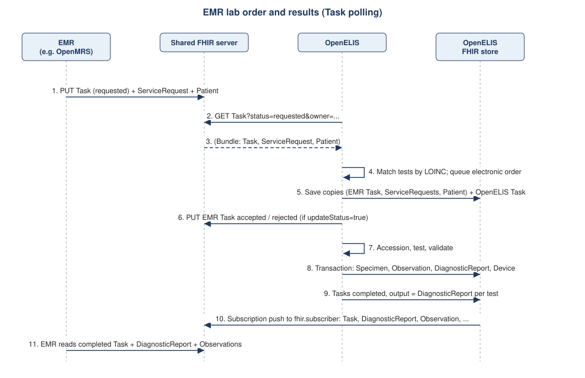

OpenELIS Global FHIR Implementation Guide
0.2.0 - ci-build

OpenELIS Global FHIR Implementation Guide
0.2.0 - ci-build

OpenELIS Global FHIR Implementation Guide - Local Development build (v0.2.0) built by the FHIR (HL7® FHIR® Standard) Build Tools. See the Directory of published versions
This page describes the exchanges OpenELIS takes part in, which resources travel in each, and the
OpenELIS configuration properties that switch them on. Property names are given without the
org.openelisglobal. prefix. They are set in the OpenELIS properties file (common.properties in the
standard Docker distribution).
OpenELIS exchanges data by polling remote FHIR servers and by writing to its co-resident FHIR store, from which FHIR Subscriptions push to a subscriber. It does not accept pushed orders on its own REST API.
This is the workflow used with OpenMRS (Lab on FHIR module), and with any EMR that can write FHIR Tasks to a shared server. Setup steps for OpenMRS are on the OpenMRS Interoperability page.

status = requested, owner = the OpenELIS service user), one
Lab Order Request ServiceRequest per test,
and the Patient to the shared FHIR server.remote.poll.frequency milliseconds (default 120000), OpenELIS searches each remote.source.uri
for Task?status=requested&owner={remote.source.identifier} and fetches the ServiceRequests and Patient.{base}/genIdType#externalId). A patient new to OpenELIS keeps the EMR's Patient id as
its OpenELIS FHIR UUID.accepted or rejected. If remote.source.updateStatus=true it also
writes that status to the EMR Task on the remote server.completed with one output per test referencing its
DiagnosticReport. OpenELIS's own Order Task for the sample, with
partOf pointing at the EMR Task, is completed the same way.fhir.subscriber.resources to
fhir.subscriber, normally the shared FHIR server, where the EMR reads the results.What OpenELIS needs in the incoming resources
| Resource | Required by OpenELIS |
|---|---|
| Task | status = requested. owner equal to one of the values in remote.source.identifier. basedOn the ServiceRequest(s). for the Patient (clinical orders). When for is absent, the ServiceRequest subject is used. Optional location: matched to the OpenELIS Organization with the same FHIR id, or created as a new referring site. |
| ServiceRequest | code with a http://loinc.org coding matching an active OpenELIS test. The first identifier is required and becomes the external order number. An order number already received is refused as a duplicate. priority (routine when absent). |
| Patient | Required for clinical orders: gender male or female, birthDate (a partially known date is kept at its precision), and at least one identifier OpenELIS recognises as a patient id: {base}/pat_nationalId, {base}/pat_stNumber, or any identifier with type {base}/genIdType#externalId. pat_guid or pat_subjectNumber alone is not enough. Missing any of these, the order is stored as non-conforming and the Task is rejected. Name, telecom and address are copied when present. |
When a test is referred from one OpenELIS laboratory to another, the referring laboratory writes an
OpenELIS Referral Task with the ServiceRequest, Specimen and
Patient. The reference laboratory picks it up with the same polling mechanism as EMR orders (its
remote.source.uri includes the server the referring lab writes to, and its remote.source.identifier matches
the Task owner).

accepted it moves the referral to
received. A rejected Task is not picked up (see Known Issues). When it sees completed it lists the returned results under Returned, needs action. A user then
accepts them into the referred test.completed and the referral Task completed, with an output of type
{base}/task_output#DiagnosticReport.cancelled. Rejecting it there sets it to
rejected. Cancelling a referral does not update the Task.Referral message examples used in production are on the Confluence page Examples of FHIR messages used.
Boxes of specimens shipped from one OpenELIS site to another travel as OpenELIS Shipment Box (SupplyDelivery) resources. SupplyDelivery is not served from the OpenELIS REST API. It is exchanged through the FHIR stores.

in-progress, so a receiver can import a box before it is sent
(see Known Issues).remote.source.uri for SupplyDelivery?status=in-progress. It runs on
demand from the shipment screen, or on a schedule when shipment.import.scheduled=true. Boxes older than
shipment.import.maxAgeDays (default 30) are ignored. Boxes are matched to the receiving site by the
destination Organization.shipment-specimen references and records non-conformities. With
remote.source.updateStatus=true it then sets the sender's SupplyDelivery to completed. This is the only
case where OpenELIS writes to a remote server outside the Task workflow.At start-up OpenELIS creates one rest-hook Subscription in its FHIR store for each resource type listed in
fhir.subscriber.resources, with the endpoint fhir.subscriber and payload application/fhir+json. The
store then pushes every change of those types. The shipped default list is
Task, Patient, ServiceRequest, DiagnosticReport, Observation, Specimen, Practitioner, Encounter.
Device, Location (storage), SupplyDelivery, Questionnaire and QuestionnaireResponse are not in the default list.
Add them if the subscriber needs them. For example, an Observation.device reference only resolves on the
subscriber if Device is subscribed.
OpenELIS also runs a periodic export task to the subscriber (every fhir.subscriber.backup.interval minutes,
default 5) to cover missed notifications.
OpenELIS can import Organizations from a facility registry (for example GOFR) and Practitioners from a provider registry:
| Property | Meaning |
|---|---|
facilitylist.fhirstore |
FHIR base URL of the facility registry. Organizations are imported with their types ({base}/orgType) and identifiers. |
facilitylist.authurl, facilitylist.username, facilitylist.password, facilitylist.auth |
Authentication for the facility registry (default basic). |
providerlist.fhirstore |
FHIR base URL of the provider registry. |
providerlist.poll.frequency |
Provider import interval in milliseconds (default 3600000). |
crserver.uri, crserver.username, crserver.password |
Client registry (for example OpenCR) used for patient search. |
| Property | Default | Meaning |
|---|---|---|
oe.fhir.system |
http://openelis-global.org |
Base of OpenELIS identifier and local code systems. Keep the default unless every partner agrees. |
fhirstore.uri |
none | Co-resident FHIR store. |
fhirstore.username, fhirstore.password |
none | Basic authentication OpenELIS sends to the FHIR store and to every remote server. |
remote.source.uri |
none | Comma-separated remote FHIR servers polled for Tasks and shipments. |
remote.source.identifier |
none | OpenELIS's identity as Task.owner, for example Practitioner/{uuid}. Practitioner/* accepts every Practitioner on the remote server. |
remote.source.updateStatus |
none (shipped: true) |
When true, OpenELIS writes accepted / rejected (Task) and completed (SupplyDelivery) back to the remote server. |
remote.poll.frequency |
120000 | Poll interval in milliseconds. |
fhir.subscriber |
none | Endpoint the FHIR store's Subscriptions push to. |
fhir.subscriber.resources |
none (distribution: see above) | Resource types to subscribe. |
fhir.subscriber.allowHTTP |
false | Allow a plain-http subscriber. |
fhir.subscriber.backup.interval |
5 | Export retry interval in minutes. |
fhir.transformOnStartup |
false | Copy existing OpenELIS data into the FHIR store at start-up. |
task.useBasedOn |
not set | Still in the shipped properties and older setup guides, but no longer read by OpenELIS. |
facility.id, facility.country, facility.state, facility.district, facility.city, facility.postalcode |
none | The site's facility identifier and address, used for the facility Organization and the {base}/facility_id identifier. |
shipment.import.scheduled, shipment.import.maxAgeDays |
false, 30 | Shipment import schedule and age window. |